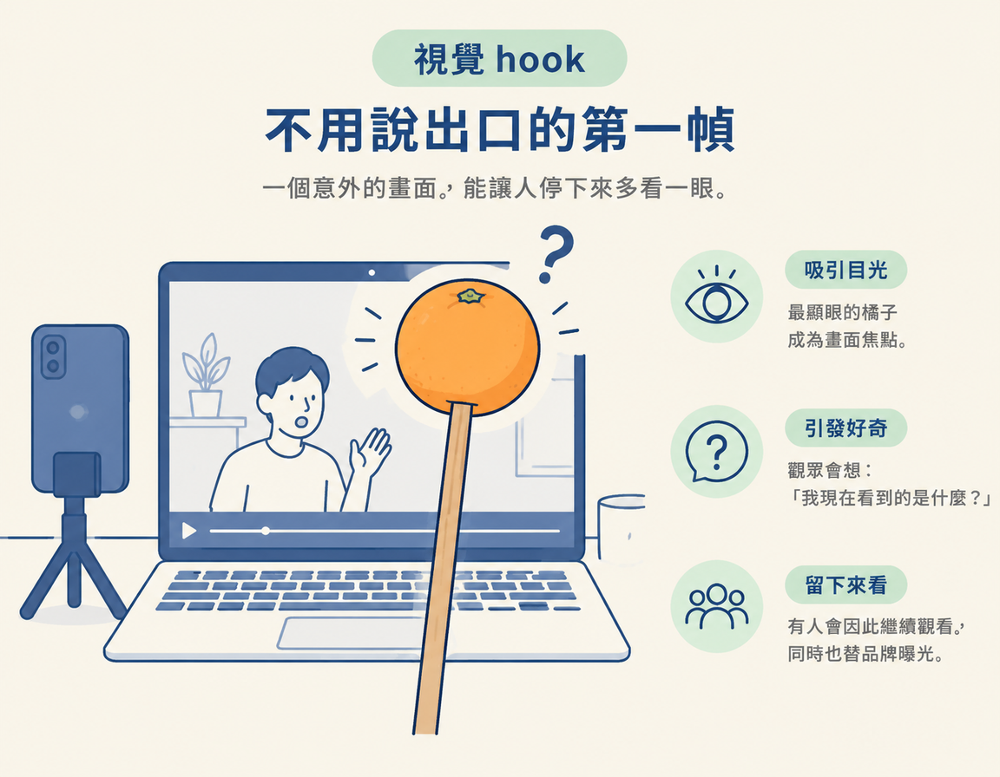
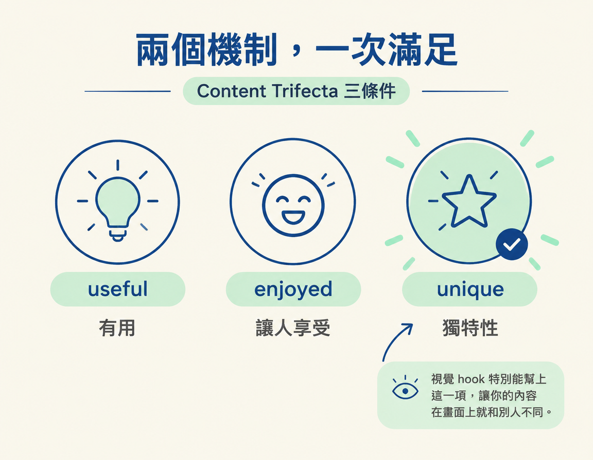

理解視覺 hook 是什麼，以及它如何同時抓住注意力、累積品牌辨識，特別適合 faceless 內容，也就是不必露出創作者本人臉孔的內容。
上一頁介紹了九種靠說話開場的句型，像是唱反調、拋出問題，或列出一串清單。但 hook 不一定要說出口。Hook 指的是內容一開始用來抓住觀眾注意力的設計，它也可以是一個畫面。
這一步接在九種口說句型之後，補上一種視覺開場方式。你可以把它想成一個既能讓人停下來、又能讓人認出你的畫面。接下來會先看講師怎麼做，再拆解這種畫面為什麼也能成為品牌記號。
講師用自己早期的內容當例子。當時他刻意把製作規格壓低：拿手邊任何一支手機對著螢幕講，並在螢幕前放一樣東西當指示棒，一顆插在筷子上的橘子。
想像影片的第一幀：鏡頭對著螢幕，畫面上最顯眼的是頂端那顆橘子。觀眾可能會冒出一個問號：「我現在看到的是什麼？」這個疑問讓人想多看一眼。那個畫面本身，就是視覺 hook。課程提到，有些人會因此留下來，而這個畫面同時也在替品牌做事。

講師接著說，這個視覺 hook 有價值，是因為它和品牌有所連結。橘色一直是他做品牌時使用的顏色，RoboNuggets 的品牌配色也是橘色。而在包含澳洲在內的一些國家，某些品種的橘子就叫 nuggets。因此，「橘子」和「nuggets」很容易自然地連在一起。
觀眾之後在動態牆再次看到那顆橘子，就會知道這是 RoboNuggets。原本用來抓住注意力的畫面，因為重複出現，逐漸成為品牌的辨識記號。
課程用 familiarity 來形容這種效果，意思是「熟悉感」：觀眾一次又一次看到同一個畫面，慢慢就能認出它。這對 faceless 內容特別有用，因為創作者不必靠露臉，也能建立熟悉感。
視覺 hook 同時發揮兩種作用。第一種是短期效果：第一幀讓人一時看不懂，觀眾因此停下來多看一眼。第二種是長期效果：同一個畫面反覆出現，觀眾逐漸把它和創作者連在一起。
簡單說，前者爭取這一次的停留，後者則讓每次出現都累積一點熟悉感。
| 視覺 hook 做的事 | 作用時間 | 帶來的效果 |
|---|---|---|
| 第一幀讓人看不懂，於是停下來 | 當下幾秒 | 抓住這次的注意力 |
| 同一個畫面反覆出現 | 跨越多支影片 | 累積品牌辨識與熟悉感 |
講師也把視覺 hook 和 Content Trifecta 連在一起。Content Trifecta 是課程用來檢視內容的三個條件：內容要有用（useful）、讓人享受（enjoyed），也要有獨特性（unique）。視覺 hook 特別能幫上「unique」這一項，因為它讓你的內容光是在畫面上就和別人不同。

講師說，你可以直接參考「用一個物件當視覺 hook」的做法，但最好想想它和自己的品牌有沒有關係。橘子的例子之所以自然，是因為橘色本來就是 RoboNuggets 的品牌色，不是硬把一個物件塞進畫面裡。
不過，視覺 hook 不一定非得和品牌綁在一起，想換掉也可以。選擇畫面時，只要多問自己一句：「這個畫面跟我的品牌有沒有關聯？」
另一個重點是把製作規格壓低。這類畫面的任務是讓人一眼看懂、容易記得，不是追求精緻。製作簡單，才有辦法大量產出，也才有機會透過反覆出現，慢慢累積熟悉感。
Hook 不一定要說出口，也可以是一個視覺畫面。講師用插在筷子上的橘子當指示棒，並刻意降低製作規格。第一幀讓人好奇，能抓住當下的注意力；橘子又和 RoboNuggets 的品牌色有所連結，重複出現後便成了辨識記號。視覺 hook 因此有兩層作用：短期讓人停下來，長期累積品牌熟悉感，對 faceless 內容尤其有用。挑選畫面時可以考慮它和品牌的關聯，但不必硬綁，也可以隨時調整。
現在，你手上有兩種開場工具：九種靠話語開場的句型，以及一種靠畫面吸引注意力的視覺 hook。下一頁會把它們接上實際流程：用工具產出 hook、唸出來測試，再收進自己的 hook library。